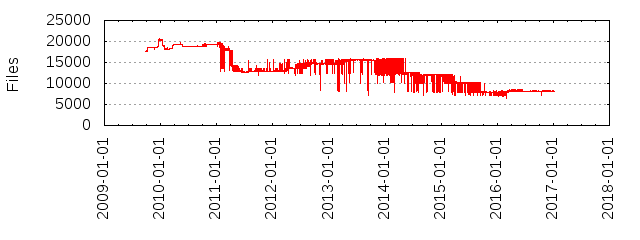

Files
- Total files
- 8199
- Total lines
- 1445008
- Average file size
- 17297.36 bytes
| Extension | Files (%) | Lines (%) | Lines/file |
|---|
| 268 (3.27%) | 243176 (16.83%) | 907 |
| 1 | 6 (0.07%) | 115 (0.01%) | 19 |
| Debian | 1 (0.01%) | 24 (0.00%) | 24 |
| GPL | 2 (0.02%) | 574 (0.04%) | 287 |
| S | 1 (0.01%) | 494 (0.03%) | 494 |
| ac | 6 (0.07%) | 1146 (0.08%) | 191 |
| am | 23 (0.28%) | 829 (0.06%) | 36 |
| android | 1 (0.01%) | 379 (0.03%) | 379 |
| aps | 1 (0.01%) | 1 (0.00%) | 1 |
| arb | 6 (0.07%) | 334 (0.02%) | 55 |
| armel | 1 (0.01%) | 274 (0.02%) | 274 |
| bat | 22 (0.27%) | 2040 (0.14%) | 92 |
| bmp | 2 (0.02%) | 0 (0.00%) | 0 |
| c | 102 (1.24%) | 46260 (3.20%) | 453 |
| cbp | 1 (0.01%) | 86 (0.01%) | 86 |
| cbproj | 3 (0.04%) | 306 (0.02%) | 102 |
| cc | 69 (0.84%) | 31666 (2.19%) | 458 |
| chm | 1 (0.01%) | 309 (0.02%) | 309 |
| cmake | 119 (1.45%) | 7790 (0.54%) | 65 |
| cmd | 1 (0.01%) | 119 (0.01%) | 119 |
| command | 8 (0.10%) | 472 (0.03%) | 59 |
| conf | 40 (0.49%) | 2225 (0.15%) | 55 |
| config | 4 (0.05%) | 12 (0.00%) | 3 |
| cpp | 1796 (21.91%) | 673479 (46.61%) | 374 |
| crt | 2 (0.02%) | 3740 (0.26%) | 1870 |
| cs | 10 (0.12%) | 1267 (0.09%) | 126 |
| csproj | 4 (0.05%) | 467 (0.03%) | 116 |
| css | 8 (0.10%) | 1482 (0.10%) | 185 |
| debian | 1 (0.01%) | 31 (0.00%) | 31 |
| def | 5 (0.06%) | 288 (0.02%) | 57 |
| desktop | 1 (0.01%) | 20 (0.00%) | 20 |
| diff | 2 (0.02%) | 84 (0.01%) | 42 |
| dll | 1 (0.01%) | 4923 (0.34%) | 4923 |
| doc | 1 (0.01%) | 193 (0.01%) | 193 |
| dot | 1 (0.01%) | 23 (0.00%) | 23 |
| dox | 40 (0.49%) | 4222 (0.29%) | 105 |
| doxy | 1 (0.01%) | 2486 (0.17%) | 2486 |
| dsp | 3 (0.04%) | 408 (0.03%) | 136 |
| dsw | 3 (0.04%) | 87 (0.01%) | 29 |
| dtd | 1 (0.01%) | 222 (0.02%) | 222 |
| eot | 6 (0.07%) | 1813 (0.13%) | 302 |
| exe | 2 (0.02%) | 7467 (0.52%) | 3733 |
| filters | 16 (0.20%) | 824 (0.06%) | 51 |
| footer | 1 (0.01%) | 10 (0.00%) | 10 |
| fx | 5 (0.06%) | 698 (0.05%) | 139 |
| gif | 59 (0.72%) | 203 (0.01%) | 3 |
| glsl | 22 (0.27%) | 1128 (0.08%) | 51 |
| gmo | 1 (0.01%) | 121 (0.01%) | 121 |
| groovy | 5 (0.06%) | 1735 (0.12%) | 347 |
| groupproj | 1 (0.01%) | 53 (0.00%) | 53 |
| guess | 1 (0.01%) | 1456 (0.10%) | 1456 |
| h | 2040 (24.88%) | 277941 (19.23%) | 136 |
| hlsl | 13 (0.16%) | 504 (0.03%) | 38 |
| hpp | 65 (0.79%) | 5885 (0.41%) | 90 |
| html | 65 (0.79%) | 9261 (0.64%) | 142 |
| i | 7 (0.09%) | 407 (0.03%) | 58 |
| ico | 1 (0.01%) | 145 (0.01%) | 145 |
| in | 63 (0.77%) | 7721 (0.53%) | 122 |
| inc | 1 (0.01%) | 50 (0.00%) | 50 |
| include | 1 (0.01%) | 97 (0.01%) | 97 |
| inl | 1 (0.01%) | 4967 (0.34%) | 4967 |
| internal | 1 (0.01%) | 35 (0.00%) | 35 |
| intm | 6 (0.07%) | 254 (0.02%) | 42 |
| jar | 2 (0.02%) | 35817 (2.48%) | 17908 |
| java | 13 (0.16%) | 1247 (0.09%) | 95 |
| jpg | 54 (0.66%) | 35229 (2.44%) | 652 |
| js | 2 (0.02%) | 17700 (1.22%) | 8850 |
| json | 14 (0.17%) | 7771 (0.54%) | 555 |
| layout | 1 (0.01%) | 61 (0.00%) | 61 |
| linux | 1 (0.01%) | 243 (0.02%) | 243 |
| list | 1 (0.01%) | 47 (0.00%) | 47 |
| m | 8 (0.10%) | 3624 (0.25%) | 453 |
| m4 | 4 (0.05%) | 666 (0.05%) | 166 |
| mak | 1 (0.01%) | 13 (0.00%) | 13 |
| manifest | 1 (0.01%) | 23 (0.00%) | 23 |
| map | 6 (0.07%) | 20 (0.00%) | 3 |
| mcp | 1 (0.01%) | 34 (0.00%) | 34 |
| md | 10 (0.12%) | 1014 (0.07%) | 101 |
| md5 | 6 (0.07%) | 0 (0.00%) | 0 |
| mk | 6 (0.07%) | 139 (0.01%) | 23 |
| mm | 33 (0.40%) | 10181 (0.70%) | 308 |
| nmake | 8 (0.10%) | 174 (0.01%) | 21 |
| nsi | 1 (0.01%) | 339 (0.02%) | 339 |
| opt | 3 (0.04%) | 872 (0.06%) | 290 |
| outtm | 6 (0.07%) | 213 (0.01%) | 35 |
| patch | 113 (1.38%) | 10916 (0.76%) | 96 |
| pbxproj | 6 (0.07%) | 14402 (1.00%) | 2400 |
| pch | 3 (0.04%) | 23 (0.00%) | 7 |
| pem | 1 (0.01%) | 3988 (0.28%) | 3988 |
| pfx | 1 (0.01%) | 9 (0.00%) | 9 |
| pkla | 1 (0.01%) | 6 (0.00%) | 6 |
| pl | 2 (0.02%) | 1119 (0.08%) | 559 |
| platform | 1 (0.01%) | 52 (0.00%) | 52 |
| plist | 9 (0.11%) | 233 (0.02%) | 25 |
| png | 1236 (15.08%) | 43669 (3.02%) | 35 |
| po | 517 (6.31%) | 75831 (5.25%) | 146 |
| pot | 1 (0.01%) | 1119 (0.08%) | 1119 |
| prefs | 1 (0.01%) | 17 (0.00%) | 17 |
| properties | 4 (0.05%) | 50 (0.00%) | 12 |
| props | 4 (0.05%) | 44 (0.00%) | 11 |
| pulse | 1 (0.01%) | 9 (0.00%) | 9 |
| pump | 4 (0.05%) | 1424 (0.10%) | 356 |
| pvr | 1 (0.01%) | 17 (0.00%) | 17 |
| py | 67 (0.82%) | 11697 (0.81%) | 174 |
| rar | 3 (0.04%) | 79 (0.01%) | 26 |
| rc | 1 (0.01%) | 117 (0.01%) | 117 |
| rtf | 1 (0.01%) | 233 (0.02%) | 233 |
| scons | 21 (0.26%) | 976 (0.07%) | 46 |
| sed | 2 (0.02%) | 16 (0.00%) | 8 |
| setup | 1 (0.01%) | 520 (0.04%) | 520 |
| sh | 19 (0.23%) | 1134 (0.08%) | 59 |
| sin | 2 (0.02%) | 42 (0.00%) | 21 |
| sln | 25 (0.30%) | 2174 (0.15%) | 86 |
| snk | 2 (0.02%) | 2 (0.00%) | 1 |
| stg | 1 (0.01%) | 0 (0.00%) | 0 |
| strings | 4 (0.05%) | 13 (0.00%) | 3 |
| sub | 1 (0.01%) | 1823 (0.13%) | 1823 |
| svg | 7 (0.09%) | 6795 (0.47%) | 970 |
| swf | 4 (0.05%) | 116 (0.01%) | 29 |
| t | 1 (0.01%) | 0 (0.00%) | 0 |
| template | 5 (0.06%) | 1099 (0.08%) | 219 |
| ttf | 13 (0.16%) | 32233 (2.23%) | 2479 |
| txt | 340 (4.15%) | 21868 (1.51%) | 64 |
| ubuntu | 2 (0.02%) | 159 (0.01%) | 79 |
| vcproj | 69 (0.84%) | 25054 (1.73%) | 363 |
| vcxproj | 62 (0.76%) | 9377 (0.65%) | 151 |
| wav | 6 (0.07%) | 519 (0.04%) | 86 |
| woff | 6 (0.07%) | 1739 (0.12%) | 289 |
| woff2 | 3 (0.04%) | 275 (0.02%) | 91 |
| xaml | 3 (0.04%) | 1043 (0.07%) | 347 |
| xcconfig | 10 (0.12%) | 275 (0.02%) | 27 |
| xib | 3 (0.04%) | 3683 (0.25%) | 1227 |
| xml | 442 (5.39%) | 89806 (6.21%) | 203 |
| xsd | 17 (0.21%) | 566 (0.04%) | 33 |
| xsp | 13 (0.16%) | 122 (0.01%) | 9 |
| yml | 2 (0.02%) | 251 (0.02%) | 125 |
| zip | 2 (0.02%) | 124 (0.01%) | 62 |